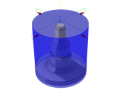

Surface Z
(Modèle)
Bossage rectangulaire XY
(Brut)
Sélectionnez une option de cycle de palpage. Les faces sélectionnées déterminent les options disponibles.
Exemples de faces sélectionnées et d'options Type de palpage:
|
|
Surface Z |
Bossage rectangulaire XY |
 |
 |
Coin extérieur XY |
Surface Y |
 |
 |
Perçage circulaire XY |
Bossage circulaire XY |